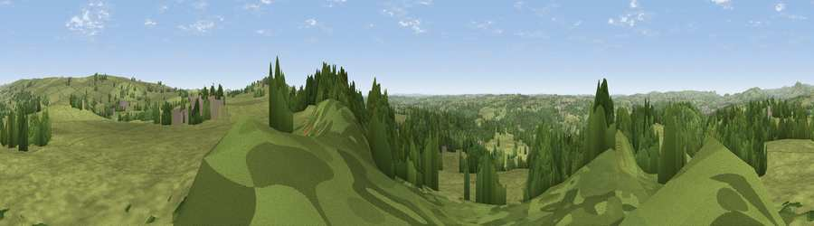

Viewpoint near Ipstones
#18075 in England · top 23% of its area beats it · near IpstonesThe view, rendered

A 360° render of this exact spot computed from the terrain model, tree cover and land cover — summer colours, afternoon light, calibrated against photographs of famous viewpoints. Real trees, hedges and buildings will differ in detail.
The panorama
Grey silhouette: terrain skyline in each direction (720 bearings, Earth curvature and refraction included). Dashed green: skyline with trees (+15 m) and buildings (+8 m) as obstacles. Blue strip: how far the ground is visible on each bearing.
Where the view opens
Wedge length = distance to the farthest visible ground on that bearing (vegetation-aware). Rings at 10, 25 and 50 km.
What fills the view
72% grassland · 25% woodland · 2% built-up · 1% cropland
Angular shares of the visible panorama (visual magnitude), not map area. Landscape diversity 0.30 (0–1 Shannon).
Key numbers
More beautiful places nearby
The staircase of upgrades: each row has a higher view potential than everything closer. Driving times are estimates from straight-line distance, calibrated against real road routing — check an actual route before setting out.
| Place | Direction | Drive | Score |
|---|---|---|---|
| Viewpoint near Onecote | NE · 3 km | ~8 min | 61.9 |
| Viewpoint near Bradnop | NNE · 4 km | ~9 min | 65.2 |
| Viewpoint near Bradnop | N · 5 km | ~10 min | 65.3 |
| Viewpoint near Thorncliffe | N · 8 km | ~15 min | 66.5 |
| Viewpoint near Cauldon Lowe | SE · 9 km | ~17 min | 71.9 |
| Viewpoint near Wootton | SE · 10 km | ~19 min | 74.8 |
| Tissington Hill | E · 14 km | ~25 min | 75.5 |
| Viewpoint near Mow Cop | WNW · 17 km | ~29 min | 78.9 |
53.06547, -1.97795 · source: screening · position refined by local search. Computed location — check access rights before visiting.